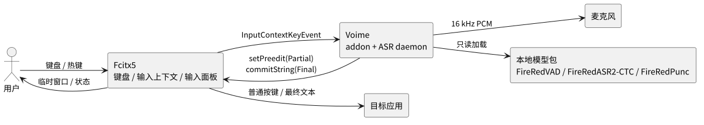
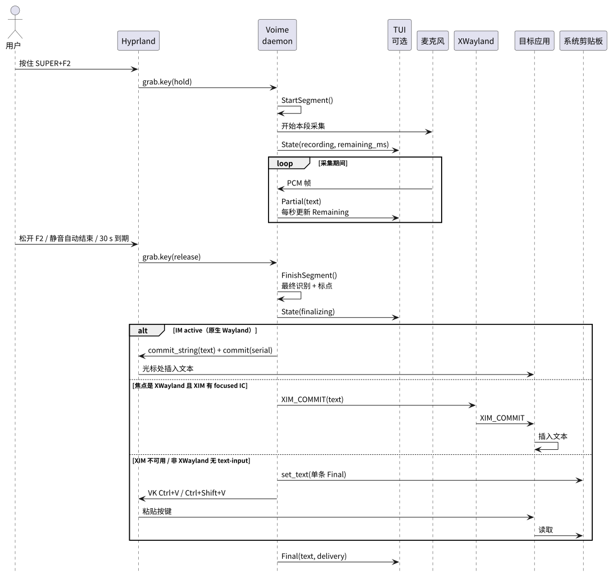
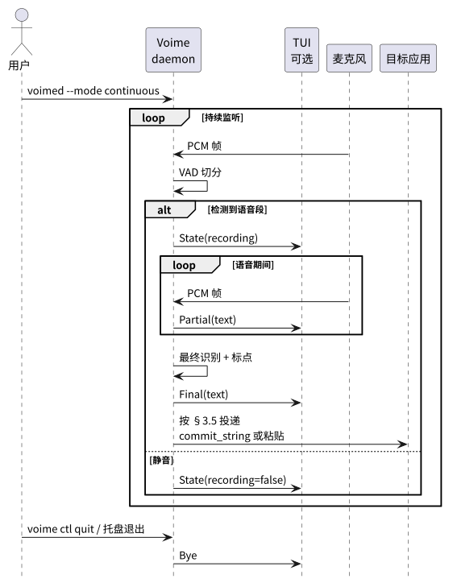

根 USER 定义 Voime 作为产品的对外边界：用户可见行为、跨组件约定和接口索引。 单个组件暴露的 API、平台实现和内部机制分别在其子文档中定义；本文只链接，不复制。
| 术语 | 定义 |
|---|---|
| Voime | 本产品；由一个常驻识别 daemon 与一个或多个平台前端组成。前端负责输入集成，daemon 负责音频与识别。 |
| 平台前端（frontend） | 把语音结果接入某个桌面输入环境的组件。Linux 前端是 Fcitx5 addon；Windows 前端是独立桌面进程，可选 TSF 文本服务。 |
daemon / voimed |
常驻识别进程；拥有音频采集、资源包加载、VAD、SenseVoice、Final 后端、标点、pipeline 与会话历史。所有平台共用同一 daemon。 |
引擎 / voime-core |
平台无关的识别库；只处理音频、模型与 pipeline，不接触键盘、输入上下文或 OS 传输。 |
| 语音段（segment） | 一次从开始到结束的采集区间；由 PTT 按下 / 松开、Toggle 开始 / 停止或 VAD 端点划分。一个语音段只有一个目标输入位置。 |
| 目标输入位置（target） | 语音段开始时聚焦的输入位置。Linux 上是 Fcitx InputContext；Windows 上是前台窗口 + 焦点元素，或 TSF ITfContext。 |
| 模式（Mode） | 语音段的触发方式：ptt（按住）、toggle（切换）或 continuous（VAD 自动分段）。 |
| 热键（Hotkey） | 前端配置的唯一组合键；ptt 按住说话，toggle 切换录音，continuous 忽略。 |
| 临时结果（Partial） | 语音段尚未结束时对已采集音频的阶段性识别文本；只用于显示，不提交。 |
| 最终结果（Final） | 语音段结束后对完整音频识别并加标点得到的一行文本；由 CPU SenseVoice 或 GPU FireRed AED 生成，提交到目标输入位置，并保存在 daemon 的会话历史中。 |
| 后端（Backend） | 选择一个 Final 推理路径。CPU 后端运行 VAD + SenseVoice；GPU 后端在 CPU 上运行 VAD、SenseVoice 与 FireRedPunc，并由 voime-gpu 在 GPU 上运行 FireRedASR。设置值持久化为 models/backend，缺省为 cpu。 |
| Final 后端 | 产生 Final 的模型路径：CPU SenseVoice（内置标点），或 GPU FireRedASR + CPU FireRedPunc。由后端设置选择，不影响 Preview。 |
voime-gpu |
可选的独立 GPU 后端进程；只加载 FireRedASR-AED FP16 与 GPU ORT / EP，不处理 Preview、VAD、分段或标点。 |
| 资源包 | default/ 包含 VAD 与 SenseVoice；firered/ 包含 FireRedASR-AED 与 FireRedPunc。每个资源包占模型根目录下的一个目录。 |
| 安装模式 | 安装脚本无参数时只安装 default/；--gpu（Windows 为 -Gpu）额外安装 firered/。安装不改变后端设置。 |
| 会话历史 | daemon 内存中已产生的最终结果列表；TUI 重连后可恢复，daemon 退出后丢失。 |
| 模型目录 | 模型根目录下两个资源包目录：default/（vad、sense-voice）与 firered/（fire-red-aed、punc）。每个模型子目录一份独立 manifest.json（schema 3，kind 与目录对应）及 ONNX / 词表 / 标签；运行期只读。 |
| 本地运行 | 运行期不访问网络、不上传音频或文本；模型、音频与 IPC 都在本机完成。 |
| 约定 | 内容 |
|---|---|
| 前端拥有配置 | Mode、Hotkey 与 Backend 由平台前端设置界面拥有；daemon 保存最近生效的后端并在启动时读取。各前端的配置载体见其 USER。 |
| 一个语音段一个目标 | 语音段开始时绑定目标；段内不改变；最终提交前复核目标仍然有效且聚焦。 |
| Partial 只显示 | Partial 只写入临时文本区域，不提交、不进入历史；空 Partial 不清空上一行。 |
| Final 才提交 | 只提交与当前目标 segment_id 匹配的 Final；先清空临时文本，再提交。 |
| 失焦不误提交 | 目标失焦或销毁时不提交；Toggle 会话停止录音；最终文本保留在 daemon 历史与 TUI。 |
| daemon 不可用 | 前端放行热键、清空临时文本并定时重连；不阻塞普通键盘输入。 |
| 前端不加载模型 | 音频、VAD、SenseVoice 与标点只存在于 daemon；GPU 库只在可选的 voime-gpu。Windows 托盘 / TSF DLL 不链接 ONNX Runtime。 |
| Preview 固定 | 所有 Partial 由常驻 SenseVoice 产生；CPU / GPU 后端选择、GPU 初始化失败回退与进程重启都不改变 Preview 的模型来源。 |
| 单后端 | 同一时刻只运行一个 Final 后端：CPU SenseVoice，或 GPU FireRedASR + CPU FireRedPunc。设置可切换；录音 / 识别中拒绝切换。GPU 初始化或推理失败时自动回退 CPU，并记录 backend=cpu。 |
| 平台等价 | Linux 与 Windows 前端可以有不同的热键、目标与提交实现，但必须遵守本文的模式、目标、Partial / Final 与失焦语义。 |
| 无持久化 | 不保存音频、按键或识别历史到磁盘；daemon 退出后会话历史丢失。 |
| 错误可见 | 启动错误写日志 / stderr；运行期单段失败丢弃该段并继续监听；前端断线不阻塞普通输入。 |

voimed 内完成；GPU 后端的 FireRedASR 在可选的 voime-gpu 中完成；TUI 是可选的本地 IPC 客户端。voime-gpu 只接收完整语音段做 Final，不参与 Preview。cpu / gpu；模型文件只读，运行期不访问网络。
ptt 按下开始、松开结束；toggle 按一下开始、再按一下结束。
| 配置项 | 取值 | 语义 | 平台载体 |
|---|---|---|---|
Mode |
ptt · toggle · continuous |
决定热键语义与 daemon 是否自动连续分段。 | fcitx-addon USER §4.1 · windows USER §4.1 |
Hotkey |
平台前端支持的组合键 | ptt 按住、toggle 切换、continuous 忽略；设为空可禁用。 |
同上 |
Backend |
cpu · gpu |
选择 Final 路径。CPU 只用 VAD + SenseVoice；GPU 使用 CPU VAD / SenseVoice / Punc 与 GPU FireRedASR。切换在空闲时生效并持久化。 | fcitx-addon USER §4.1 · windows USER §4.1 |
| 模型目录 | default/ · firered/ |
不是前端配置项。daemon 从模型根目录加载资源包；前端设置页只选择后端，不直接加载模型。 | voimed USER §4.4 · 根 BUILD §4 |
Mode、Hotkey 与 Backend；Fcitx 与 Windows 设置窗口都提供 CPU / GPU 选择。--gpu 后仍需要在设置中选择 GPU。| 入口 | 用途 | 详细契约 |
|---|---|---|
voimed | 常驻 ASR daemon；模式与热键由前端通过 IPC 提供，后端由设置文件或 --backend 选择，资源包从模型根目录加载。 | voimed USER §4.1 |
voime | 可选 TUI；连接 daemon，显示模式、热键、后端、临时结果与历史。 | voime USER §4.2 |
voime ctl | 一次性控制客户端：start / stop / toggle / status / clear / backend / quit。 | voime USER §4.3 |
voime doctor | 检查端点、daemon、两个资源包、后端设置、GPU runtime、音频与平台前端；只读。 | voime USER §4.4 |
| 接口 | 定义位置 | 消费者 |
|---|---|---|
引擎公开 API（Config / 音频 / pipeline / 模型清单 / FinalBackend） | voime-core USER | voimed、voime doctor |
| IPC 消息、JSON lines、协议版本、错误码 | voime-ipc USER | voimed、voime、Linux / Windows 前端 |
| 本机传输契约（Endpoint / Listener / Stream） | voime-transport USER | voimed、voime、Windows 前端 |
| daemon 会话、后端选择与切换、GPU 回退、worker 生命周期、广播、背压 | voimed USER | 前端、TUI、ctl |
| voime-gpu 协议、生命周期、GPU runtime 与 FireRed AED 张量 | voime-gpu USER · PROVIDER | voimed、打包脚本 |
| Linux 热键、目标、临时窗口、提交 | fcitx-addon USER | Fcitx5 用户 |
| Windows 热键、目标、浮层、注入、TSF | windows USER | Windows 用户 |
| TUI、ctl、doctor 的命令与界面 | voime USER | 用户 / 运维 |
| 阶段 | 契约 | 实现所有者 |
|---|---|---|
| 触发 | PTT / Toggle 在按键事件中绑定目标并发 Start / Stop；Continuous 由 VAD 自动开始 / 结束。 | 平台前端 · voimed USER §2 |
| 临时文本 | 收到 Partial 显示；为空时保留上一行；不提交。Partial 始终来自常驻 SenseVoice。 | 平台前端 · fcitx-addon USER §3.3 · windows USER §3.4 |
| Toggle 会话 | 首次按下显示临时窗口并保持；每个 Final / 空段 / ASR 错误后清空文本但保留空白窗口，直到再次按下、目标失效或断线。 | 平台前端 · windows USER §3.4 |
| 最终文本 | 只接受当前段 segment_id 的 Final；Final 来自设置选择的 CPU SenseVoice 或 GPU FireRedASR，标点分别为内置或 FireRedPunc；先清空临时文本（Toggle 会话保留空白窗口），再提交。 | 平台前端 · voime-ipc USER §4.3 |
| 后端选择 | 设置选择 cpu / gpu；启动时按 models/backend 加载，运行中切换只在空闲时执行。GPU 初始化失败自动回退 CPU SenseVoice。 | voimed USER §3.3 · 根 BUILD §4 |
| GPU 不可用 | Final 回退 CPU SenseVoice；Preview 与 VAD / Punc 继续；不加载 CPU AED。 | voimed USER §4.5 |
| 目标失效 | 不提交；清空临时文本；Toggle 停止；文本保留在 daemon 历史。 | 平台前端 · voimed USER §3 |
| daemon 断线 | 放行热键、清空临时文本、定时重连；不阻塞普通输入。 | 平台前端 · voime-transport USER |
| 平台 / 形态 | 支持 | 边界 | 契约 |
|---|---|---|---|
| Linux + Fcitx5 | 是 | 原生 Wayland、XWayland / XIM；不覆盖无 text-input 的窗口。 | fcitx-addon USER |
| Windows 后台听写 | 是（P3） | 普通 Win32 / Chromium / Office 等；提权、游戏、部分终端/UWP 有覆盖边界。 | windows USER |
| Windows TSF 输入法 | 未实现（可选 P4） | 需要成为当前输入法；非 TSF 应用不覆盖。 | windows USER §3.5 |
| GPU 后端 | 可选 | Linux AMD MIGraphX 先做；Windows DirectML / NVIDIA 后续；无 GPU、runtime 缺失或 firered 资源包缺失时回退 CPU SenseVoice。 | voime-gpu USER · PROVIDER |
| 锁屏 / 安全桌面 | 否 | 不承诺热键、临时文本或提交。 | — |
Voime 没有统一的自绘 UI；各平台前端使用宿主或系统提供的输入界面。产品级只约束元素关系， 具体调色板、几何与状态由各前端 USER 的 UI 章节定义。
| 界面 | 形态 | 所有者 |
|---|---|---|
| Linux 临时文本窗口 | Fcitx InputPanel preedit，由 Fcitx UI 渲染 | fcitx-addon USER §5 |
| Linux 配置界面 | fcitx5-configtool 的 Addons 页面 | fcitx-addon USER §4.1 |
| TUI | 终端备用屏幕；历史、临时行、提示行 | voime USER §5 |
| Windows 托盘 / 浮层 | 系统托盘菜单 + 无激活浮层 | windows USER §5 |
| Windows 设置窗口 | egui 设置窗口；Mode / Backend / Hotkey / 浮层 / 登录启动 | windows USER §5 |